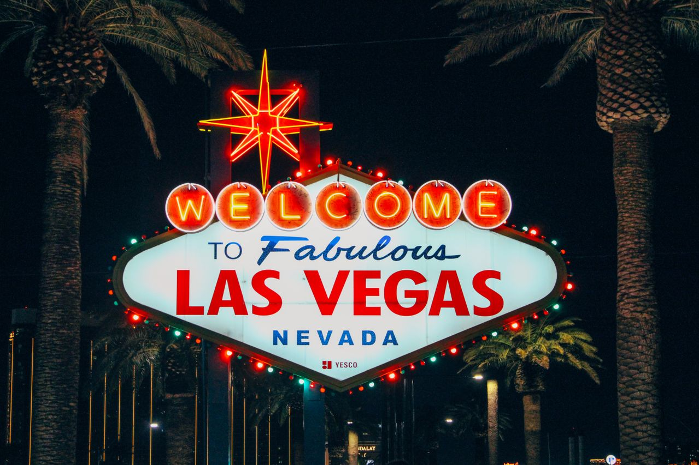
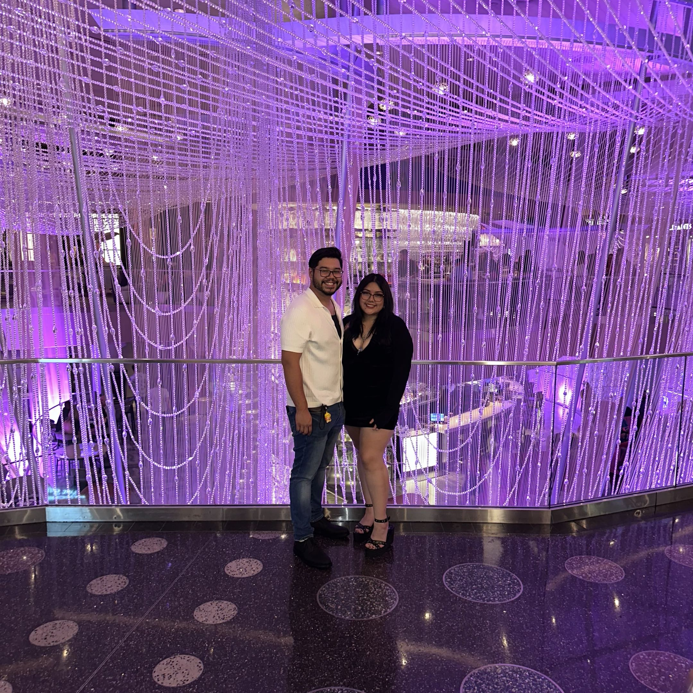
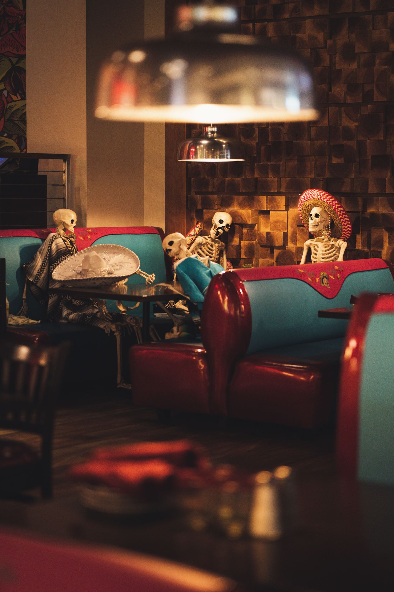

ATTRACTIONS & ENTERTAINMENT
Things to Do
Explore attractions, shows, nightlife, and shopping throughout Las Vegas.
Explore Attractions →Photo by Luana Scorsoni on Pexels
Las Vegas, Your Way
Delicious food, sweet treats, and a night to remember.
WELCOME TO LAS VEGAS
Las Vegas has so much to offer, from exciting attractions and nightlife to delicious food and shopping. Whether you're visiting for the first time or looking for something new to try, this guide will help you explore different places around the city. It's especially made for adults 21 and older who want to enjoy everything Las Vegas has to offer.
THE STORY BEHIND THE GUIDE
When I first visited Las Vegas, there were so many places I wanted to explore, but I didn't really know where to start. Between all the restaurants, attractions, shopping, and nightlife, everything felt a little overwhelming, especially since I only had a few days to enjoy everything.
That's why I wanted to create this guide for people who are visiting Las Vegas for the first time. I wanted to share some of the places I enjoyed during my trip, along with other places I didn't get the chance to visit but would still like to try. My goal is to help visitors find different things to do and make planning their trip a little easier.

PLAN YOUR TRIP
Whether you're looking for things to do or places to eat, find ideas to help you plan your Las Vegas trip.

ATTRACTIONS & ENTERTAINMENT
Explore attractions, shows, nightlife, and shopping throughout Las Vegas.
Explore Attractions →Photo by Luana Scorsoni on Pexels

FOOD & DINING
Discover casual meals, seafood, desserts, and restaurants for a special dinner.
Explore Dining →Photo by Clément Proust on Pexels